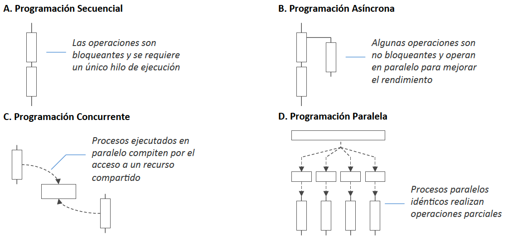
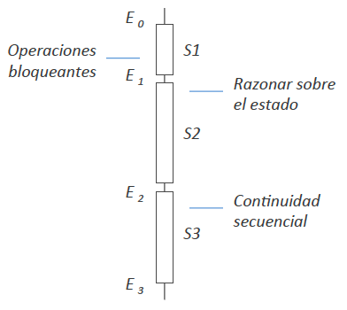
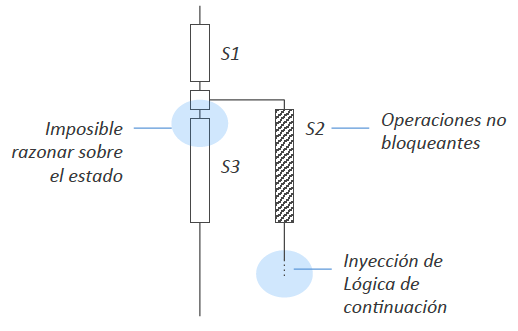
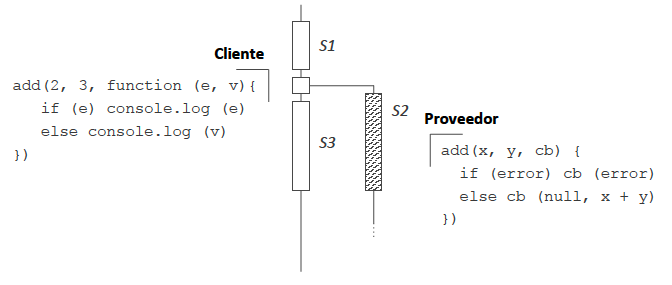
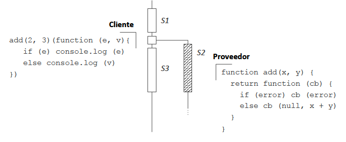
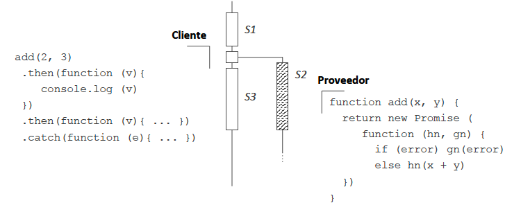

Programación asíncrona¶
La programación asíncrona promueve la definición de operaciones no bloqueantes.

por Javier Vélez Reyes, Programación asíncrona en JavaScript
Las funciones no bloqueantes afectan a:
- El estado del programa
- La lógica de continuación del programa
| programación secuencial | programación asíncrona |
|---|---|
|  |  |
| por Javier Vélez Reyes, Programación asíncrona en JavaScript |
Modelos de paso de continuaciones¶
Aumentar la aridad de la función no bloqueante en 1 argumento adicional, donde se indica la lógica de continuación.
Callbacks¶
La lógica de continuación se indica mediante una función de retrollamada o callback.
 por Javier Vélez Reyes, Programación asíncrona en JavaScript
Ejemplos: implementaciones de listener del ejercicio introductorio
- Con clases anónimas
- Con adaptadores
- Con funciones anónimas o lambdas
Ejemplo: Ajax + jQuery callbacks¶
Ejemplo: callback en TypeScript¶
function delayedResponseWithCallback(callback: Function) {
function delayedAfterTimeout() {
console.log(`delayedAfterTimeout`);
callback();
}
setTimeout(delayedAfterTimeout, 1000);
}
function callDelayedAndWait() {
function afterWait() {
console.log(`afterWait`);
}
console.log(`calling delayedResponseWithCallback`);
delayedResponseWithCallback(afterWait);
console.log(`after calling delayedResponseWithCallback`);
}
callDelayedAndWait();
Salida:
calling delayedResponseWithCallback
after calling delayedResponseWithCallback
delayedAfterTimeout
afterWait
El uso de callbacks hace el código complejo, repetitivo y difícil de entender, especialmente cuando el tamaño del código crece.
Thunks¶
thunk = subrutina empleada para inyectar un cómputo adicional en otra subrutina
- Difieren un cómputo hasta que éste se necesita
- Insertan una operación al principio o al final de otra
- Aumentan la aridad de la función no bloqueante en una fase adicional de evaluación parcial para recibir la lógica de continuación
- Un thunk puede guardar su estado final para evitar recalcularlo (memoization)

por Javier Vélez Reyes, Programación asíncrona en JavaScript
Lenguajes: Ruby¶
- Cualquier función en Ruby puede recibir un bloque
do...endcomo argumento adicional (no explícito) a la llamada - Un thunk es como un bloque con un
yieldal final
Promesas¶
Modelo de futuros y promesas
- Futuro: marcador de posición (placeholder), de solo lectura, para una variable que representa el resultado de un cómputo asíncrono
- Promesa: contenedor de una asignación escribible (solo para inicialización), que fija el valor de un futuro.
En programación funcional, los futuros y promesas sirven para desacoplar un valor (el futuro) de cómo éste se calculó (la promesa), permitiendo así la paralelización de los cálculos.

por Javier Vélez Reyes, Programación asíncrona en JavaScript
El cliente recibe como respuesta inmediata una abstracción de datos (la promesa) que representa un compromiso de valor futuro, con inyectores (then, catch) para incluir la lógica de continuación.
Se pueden encadenar cálculos usando futuros computables o escuchables, que sirven para indicar a un thread que ejecute una determinada tarea y, cuando termine, se dirija a hacer otra tarea usando el resultado de la tarea anterior.
Lenguajes: TypeScript¶
En TypeScript, una Promise<T> es un objeto que, en su creación, recibe una función (anónima o no) que acepta dos callbacks (resolve y reject) y devuelve un valor de tipo T.
Ejemplo: definición de promesa que resuelve¶
function delayedPromise(): Promise<void> {
return new Promise<void>
(
// función anónima con dos callbacks como argumentos
( resolve : () => void, //callback para resolver
reject: () => void //callbak para rechazar
) => {
// función que resuelve tras un timeout de 1 sg.
function afterTimeout() {
resolve();
}
setTimeout(afterTimeout, 1000);
}
);
}
Ejemplo: uso para resolver¶
function callDelayedPromise() {
console.log(`calling delayedPromise`);
delayedPromise().then(
// función anónima a llamar cuando se resuelva la promesa
() => { console.log(`delayedPromise.then()`) }
);
}
callDelayedPromise();
Salida:
calling delayedPromise
delayedPromise.then()
Ejemplo: definición de promesa que rechaza¶
function errorPromise(): Promise<void> {
return new Promise<void>
(
( resolve: () => void,
reject: () => void
) => {
reject();
}
);
}
Ejemplo: uso para rechazar¶
function callErrorPromise() {
console.log(`calling errorPromise`);
errorPromise().then(
() => { console.log(`no error.`) }
).catch(
() => { console.log(`an error occurred`)}
);
}
callErrorPromise();
Salida:
calling errorPromise
an error occurred
Comparación callbacks-promises en TypeScript¶
Mecanismo de los callback¶
function standardCallback() {
function afterCallbackSuccess() {
// execute this code
}
function afterCallbackError() {
// execute on error
}
// invoke async function
invokeAsync(afterCallbackSuccess, afterCallbackError);
}
Sintaxis (fluent) de las promesas¶
function usingPromises() {
// invoke async function
delayedPromise().then(
() => {
// execute on success
}
).catch (
() => {
// execute on error
}
);
}
Async/await¶
- El prefijo
awaithace que se espere a que se llame a la función asíncrona antes de continuar con la ejecución del programa. - Esto genera un flujo de ejecución de la lógica del programa más fácil de leer y de seguir, pausando la ejecución hasta que se cumpla la promesa.
function awaitDelayed(): Promise<void> {
return new Promise<void> (
( resolve: () => void,
reject: () => void ) =>
{
function afterWait() {
console.log(`calling resolve`);
resolve();
}
setTimeout(afterWait, 1000);
}
);
}
async function callAwaitDelayed() {
console.log(`call awaitDelayed`);
await awaitDelayed();
console.log(`after awaitDelayed`);
}
callAwaitDelayed();
Salida:
call awaitDelayed
calling resolve
after awaitDelayed
Comparación sintaxis then/catch y async/await¶
Promesas que usan then/catch para definir funciones anónimas a llamar dependiendo del resultado éxito/fracaso de la ejecución:
function simplePromises() {
// invoke async function
delayedPromise().then(
() => {
// execute on success
}
).catch (
() => {
// execute on error
}
);
// code here does NOT wait for async call
}
Sintaxis async/await, más legible y menos propensa a errores:
async function usingAsyncSyntax() {
try {
await delayedPromise();
// execute on success
} catch(error) {
// execute on error
}
// code here waits for async call
}
Lenguajes: Java¶
En Java hay definida una interfaz explícita para los futuros:
- Desde Java 5:
java.util.concurrent.Future - Desde Java 8, inspirado por los
ListenableFuturede Guava:java.util.concurrent.CompletableFuture
Ejemplo: Future en Java¶
// Callable<V> = Interfaz funcional que representa a una operación sin args
// y que devuelve un resultado de tipo V (permite checked exceptions)
public static class MyCallable implements Callable<Integer> {
@Override
public Integer call() throws Exception {
Thread.sleep(1000);
return 1;
}
}
public static void main(String[] args) throws Exception{
ExecutorService exec = Executors.newSingleThreadExecutor();
Future<Integer> f = exec.submit(new MyCallable());
System.out.println(f.isDone()); //False
System.out.println(f.get()); //Waits until the task is done, then prints 1
}
Ejemplo: CompletableFuture en Java¶
// Supplier<T> = Interfaz funcional que representa a una operación sin args
// y que devuelve un resultado de tipo T (no permite checked exceptions)
public static class MySupplier implements Supplier<Integer> {
@Override
public Integer get() {
try {
Thread.sleep(1000);
} catch (InterruptedException e) {
//Do nothing
}
return 1;
}
}
public static class PlusOne implements Function<Integer, Integer> {
@Override
public Integer apply(Integer x) {
return x + 1;
}
}
public static void main(String[] args) throws Exception {
ExecutorService exec = Executors.newSingleThreadExecutor();
CompletableFuture<Integer> f = CompletableFuture.supplyAsync(new MySupplier(), exec);
System.out.println(f.isDone()); // False
CompletableFuture<Integer> f2 = f.thenApply(new PlusOne());
System.out.println(f2.get()); // Waits until the "calculation" is done, then prints 2
}
Lenguajes, JavaScript¶
LECTURA recomendada: Promises/A+: An open standard for sound, interoperable JavaScript promises.
Modelos de eventos¶
Las operaciones disparan eventos de diferentes tipos, que son escuchados por los manejadores (listeners) de eventos, que los clientes han registrado en un bus de eventos
Eventos¶

por Javier Vélez Reyes, Programación asíncrona en JavaScript
Streams¶
Los datos fluyen por pipelines y se consumen siguiendo modelos push o pull

por Javier Vélez Reyes, Programación asíncrona en JavaScript
Observables¶
LECTURA recomendada: The introduction to Reactive Programming you've been missing (by @andrestaltz)